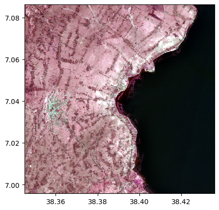
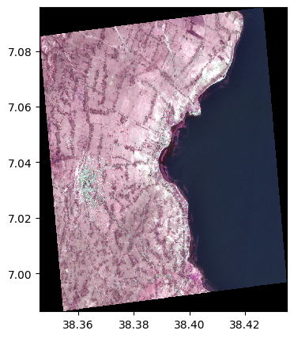
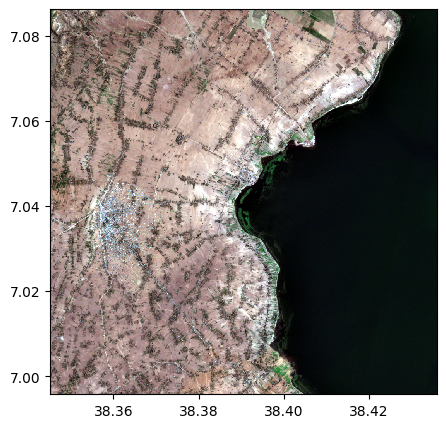
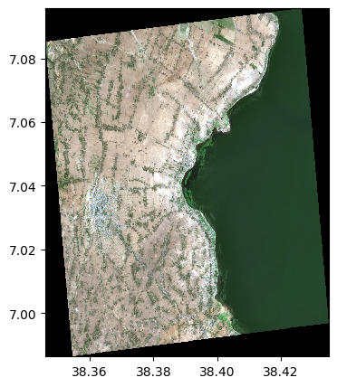

import rastereasy
Re projection
name_im = './data/demo/sentinel.tif'
image=rastereasy.open(name_im)
image.info()
- Size of the image:
- Rows (height): 1000
- Cols (width): 1000
- Bands: 12
- Spatial resolution: 10.0 meters / degree (depending on projection system)
- Central point latitude - longitude coordinates: (7.04099599, 38.39058840)
- Driver: GTiff
- Data type: int16
- Projection system: EPSG:32637
- Nodata: -32768.0
- Given names for spectral bands:
{'1': 1, '2': 2, '3': 3, '4': 4, '5': 5, '6': 6, '7': 7, '8': 8, '9': 9, '10': 10, '11': 11, '12': 12}
help(image.reproject)
Help on method reproject in module rastereasy:
reproject(projection='EPSG:3857', inplace=False, dest_name=None) method of rastereasy.Geoimage instance
Reproject the image to a different coordinate reference system (CRS).
This method transforms the image to a new projection system, which
changes how the image's coordinates are interpreted. This can be useful for
aligning data from different sources or preparing data for specific analyses.
Parameters
----------
projection : str, optional
The target projection as an EPSG code or PROJ string.
Examples:
- "EPSG:4326": WGS84 geographic (lat/lon)
- "EPSG:3857": Web Mercator (used by web maps)
- "EPSG:32619": UTM Zone 19N
Default is "EPSG:3857" (Web Mercator).
inplace : bool, default False
If False, return a copy. Otherwise, do reprojection in place and return None.
dest_name : str, optional
Path to save the reprojected image. If None, the image is not saved.
Default is None.
Returns
-------
Geoimage
The reprojected image or None if `inplace=True`
Examples
--------
>>> # Reproject to WGS84 (latitude/longitude)
>>> image_reprojected = image.reproject("EPSG:4326")
>>> image_reprojected.info() # Shows new projection
>>>
>>> # Reproject to UTM Zone 17N and save
>>> image_reprojected = image.reproject("EPSG:32617", dest_name="utm.tif")
>>>
>>>
>>> # Reproject to WGS84 (latitude/longitude) and modify inplace the image
>>> image.reproject("EPSG:4326", inplace=True)
>>> image.info() # Shows new projection
>>>
>>> # Reproject to UTM Zone 17N and save
>>> image.reproject("EPSG:32617", dest_name="utm.tif", inplace=True)
Notes
-----
- Reprojection can change the pixel values due to resampling
- The dimensions of the image will typically change during reprojection
- Common projection systems include:
- EPSG:4326 - WGS84 geographic coordinates (latitude/longitude)
- EPSG:3857 - Web Mercator (used by Google Maps, OpenStreetMap)
- EPSG:326xx - UTM Zone xx North (projected coordinate system)
- EPSG:327xx - UTM Zone xx South (projected coordinate system)
Two options
Return a reprojected image (function
reproject)Directly reproject the original image (function
reprojectwithinplace=Trueoption)
1) Return a reprojected image
names = {"CO" : 1,"B": 2,"G":3,"R":4,"RE1":5,"RE2":6,"RE3":7,"NIR":8,"WA":9,"SWIR1":10,"SWIR2":11,"SWIR3":12}
image=rastereasy.open(name_im, names=names)
print('----Original image--')
image.info()
image.colorcomp(['RE1','B','G'])
# dest_name : to save the image
image_reprojected=image.reproject('EPSG:27700', dest_name='./data/results/save/reprojection.tif')
print('----Re projected image--')
image_reprojected.info()
image_reprojected.colorcomp(['RE1','B','G'])
----Original image--
- Size of the image:
- Rows (height): 1000
- Cols (width): 1000
- Bands: 12
- Spatial resolution: 10.0 meters / degree (depending on projection system)
- Central point latitude - longitude coordinates: (7.04099599, 38.39058840)
- Driver: GTiff
- Data type: int16
- Projection system: EPSG:32637
- Nodata: -32768.0
- Given names for spectral bands:
{'CO': 1, 'B': 2, 'G': 3, 'R': 4, 'RE1': 5, 'RE2': 6, 'RE3': 7, 'NIR': 8, 'WA': 9, 'SWIR1': 10, 'SWIR2': 11, 'SWIR3': 12}

----Re projected image--
- Size of the image:
- Rows (height): 1100
- Cols (width): 1100
- Bands: 12
- Spatial resolution: 13.086847568491946 meters / degree (depending on projection system)
- Central point latitude - longitude coordinates: (7.04105390, 38.39059931)
- Driver: GTiff
- Data type: int16
- Projection system: EPSG:27700
- Nodata: -32768.0
- Given names for spectral bands:
{'CO': 1, 'B': 2, 'G': 3, 'R': 4, 'RE1': 5, 'RE2': 6, 'RE3': 7, 'NIR': 8, 'WA': 9, 'SWIR1': 10, 'SWIR2': 11, 'SWIR3': 12}

2) Directly reproject to the image
image=rastereasy.open(name_im)
print('----Original image--')
image.info()
image.colorcomp([4,3,2])
print('----Re projected image--')
image.reproject('EPSG:27700', inplace=True)
image.info()
image.colorcomp([4,3,2])
----Original image--
- Size of the image:
- Rows (height): 1000
- Cols (width): 1000
- Bands: 12
- Spatial resolution: 10.0 meters / degree (depending on projection system)
- Central point latitude - longitude coordinates: (7.04099599, 38.39058840)
- Driver: GTiff
- Data type: int16
- Projection system: EPSG:32637
- Nodata: -32768.0
- Given names for spectral bands:
{'1': 1, '2': 2, '3': 3, '4': 4, '5': 5, '6': 6, '7': 7, '8': 8, '9': 9, '10': 10, '11': 11, '12': 12}

----Re projected image--
- Size of the image:
- Rows (height): 1100
- Cols (width): 1100
- Bands: 12
- Spatial resolution: 13.086847568491946 meters / degree (depending on projection system)
- Central point latitude - longitude coordinates: (7.04105390, 38.39059931)
- Driver: GTiff
- Data type: int16
- Projection system: EPSG:27700
- Nodata: -32768.0
- Given names for spectral bands:
{'1': 1, '2': 2, '3': 3, '4': 4, '5': 5, '6': 6, '7': 7, '8': 8, '9': 9, '10': 10, '11': 11, '12': 12}
